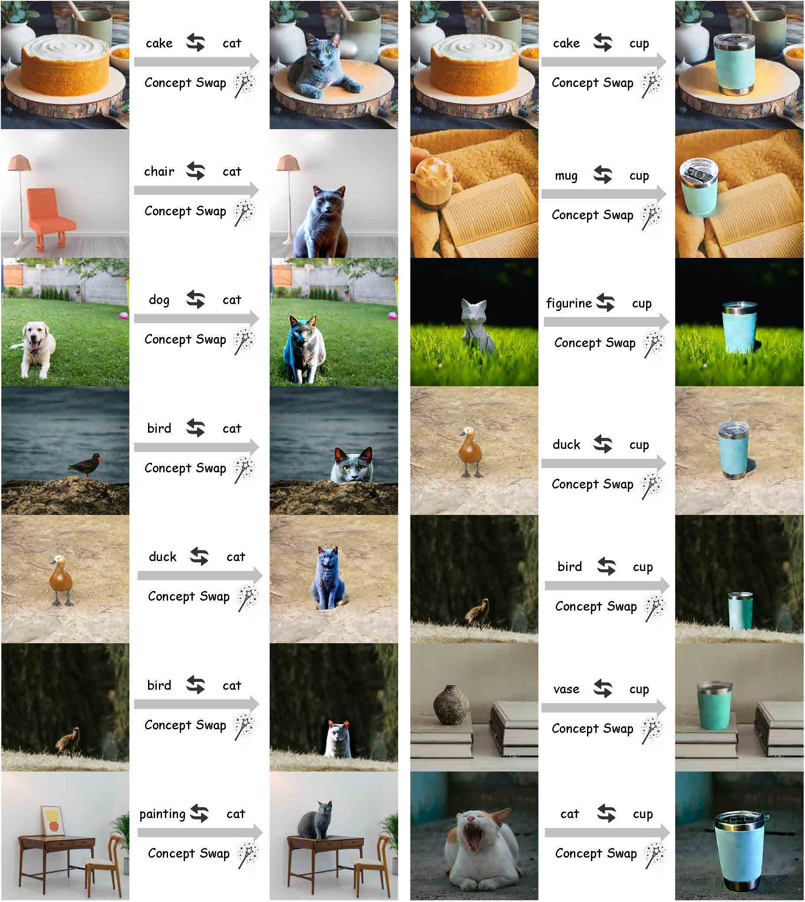
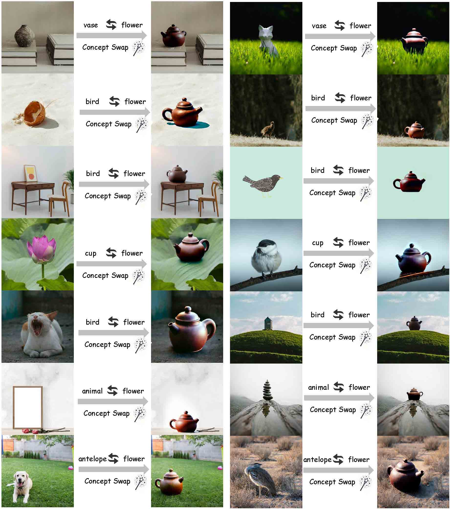
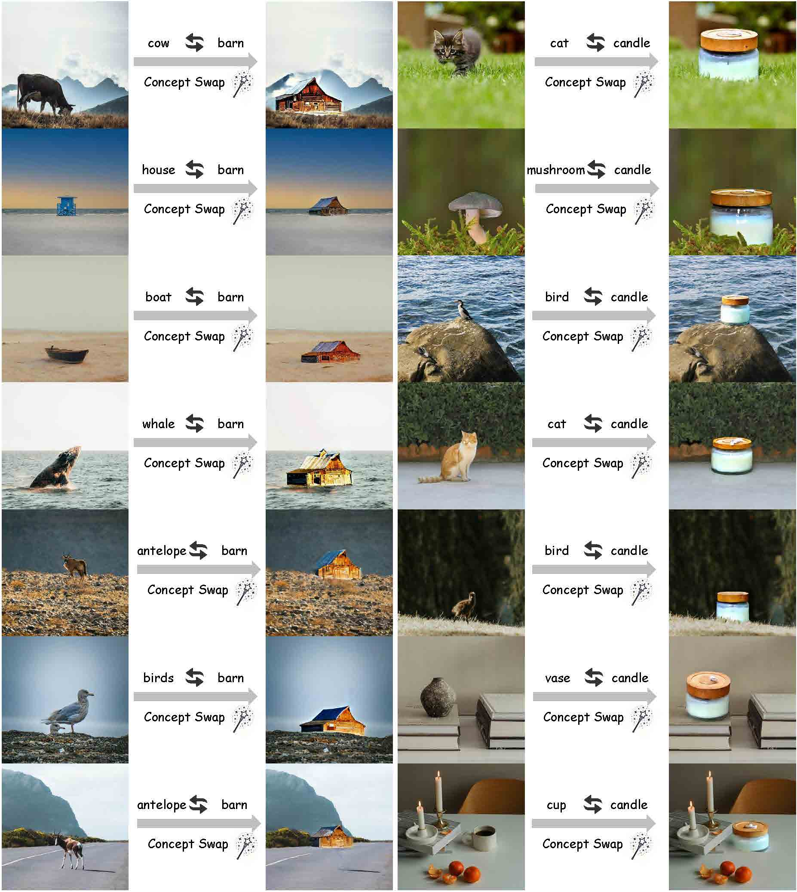

Gallery

Gallery placeholder 1 copied from an existing asset. Replace it with a final MoKus qualitative result.

Gallery placeholder 2 copied from an existing asset. Replace it with a final MoKus qualitative result.

Gallery placeholder 3 copied from an existing asset. Replace it with a final MoKus qualitative result.

Gallery placeholder 4 copied from an existing asset. Replace it with a final MoKus qualitative result.

Gallery placeholder 5 copied from an existing asset. Replace it with a final MoKus qualitative result.
